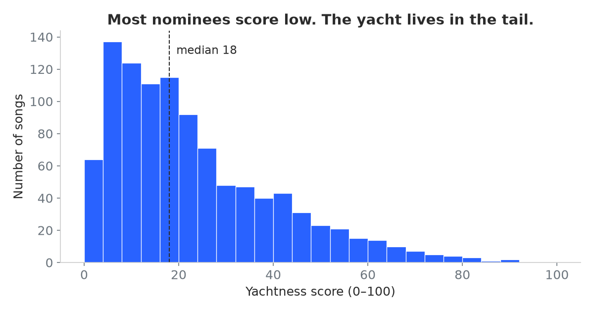
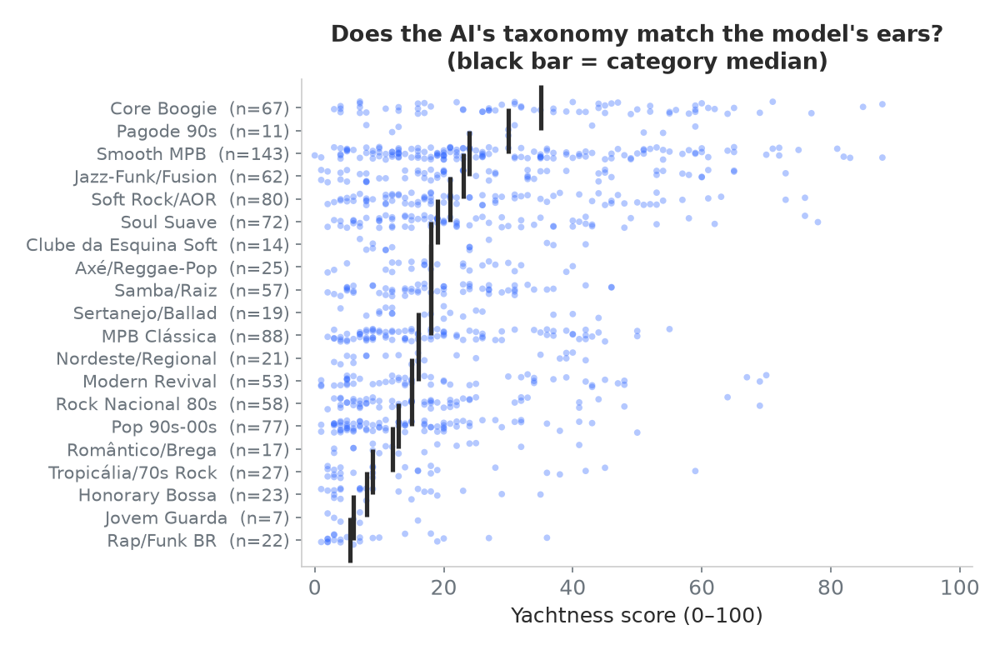
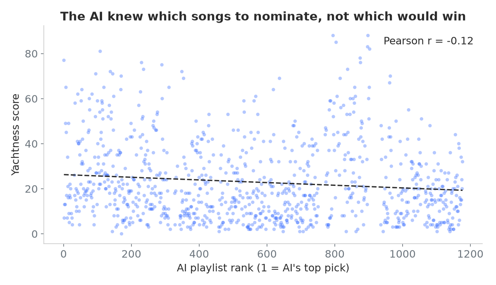

The Brazilian Yacht Rock Leaderboard
Brazil spent the late '70s and '80s perfecting its own kind of smooth. Boogie, MPB, and jazz-funk records built on the same Rhodes pianos, session players, and immaculate production that the yacht rock canon is made of. As a Brazilian who built a yacht rock detector, I had to know: how yachty is Brazilian music, really?
The experiment
I started with a question to a large language model: if there were a Spotify playlist called Brazilian Yacht Rock, which 1,000 songs would be on it? It came back with 1,177 candidates, each tagged with its own invented genre label. "Core Boogie," "Smooth MPB," "Soul Suave," and so on. Honestly, a pretty good taxonomy.
I matched those candidates against Deezer's catalogue with strict artist and title verification, dropping anything fuzzy rather than risking a wrong match. That left 1,028 songs, 87% of the list, each with a real 30-second preview. Then every one of them went through the exact same model that powers Yachtness Score. No special treatment for being Brazilian. The top 50 are now a permanent section on the leaderboard.
So the division of labor was: the AI curated the candidates, and the model judged them. Keep that split in mind, because it turns out to matter.

Who won
Two songs tie for first at 88: "Maré" by Carlos Bivar, a gorgeous obscurity, and "Miragem" by Djavan, which is not obscure at all if you grew up in Brazil. And then Djavan just keeps going. He has four of the top six ("Miragem," "Infinito," "Topázio," "Lilás") and eight of the top 50, more than any other artist. I went in expecting him to do well and he still beat my expectations. If yacht rock has a Brazilian Michael McDonald, the data says it is Djavan.
Behind him, Ed Motta and Lucas Arruda have four top-50 songs each, and Banda Black Rio has three. Marcos Valle is there too, and his "Estrelar" (77) deserves a special mention that I will get to.
Only five songs in the whole set had actually been rated by the Yacht or Nyacht? hosts, so for those five the board shows their cross-validated scores: "Estrelar" at 77, Biafra's "Leão Ferido" at 52, Rita Lee's "Lança Perfume" at 51, Guilherme Arantes's "Deixa Chover" at 41, and Gilberto Gil's "Palco" at 37. Everything else was scored live by the model.
Most of the list is not yacht, and that is fine
The AI was asked for songs that could plausibly belong on a Brazilian yacht rock playlist, and it cast a wide net. The model, actually listening to the audio, was much stricter. The median score is 18. More than half the songs (57%) score 20 or below, and only 19 songs out of 1,028 clear 70. This is not a playlist of yacht rock. It is a large pile of candidates with a thin, genuinely smooth layer floating on top.

The boogie era hump is real
Yacht rock is supposed to be a 1976 to 1984 phenomenon, so I checked whether the model hears an era effect in the Brazilian data too. It does, loudly. Songs released between 1977 and 1987 have a median score of 33. Songs from before 1977 have a median of 8, and everything after the '80s sits in the high teens. The window when Brazilian studios went all in on boogie and polished MPB is exactly the window the model finds smoothest.
But here is the twist: the median release year inside the top 50 is 2005. That is because artists like Ed Motta and Lucas Arruda kept making, and still make, records with that exact production style, and the model cannot tell 2015 boogie revival from 1982 boogie. The era ended. The sound never did.
Does the AI's taxonomy match the model's ears?
More than I expected. If you group the songs by the genre label the language model invented and look at what the audio model thought of each group, the ordering is remarkably sensible. "Core Boogie" has the highest median at 35, the smooth and jazz-funk categories cluster in the middle, and the acoustic and aggressive buckets (Rap/Funk, Tropicália, Honorary Bossa) sink to the bottom with medians under 10. Two models that never exchanged a word, one reading text and one hearing audio, and they broadly agree on which styles are smooth.
One nuance: although Core Boogie has the highest median, the category that put the most songs in the top 50 is actually Smooth MPB, with 17. It is a much bigger bucket, so even a lower hit rate produces more hits. Djavan alone does a lot of that work.

The AI knew which songs, not which would win
The language model also handed me its own ranking, an ordering from 1 to 1,177 of how central each song was to the concept. If the AI could actually hear, its ranking should predict the model's scores. It barely does. The correlation is essentially flat, r = −0.12, and yes, that is negative.
My favorite detail: the AI's top 20 picks have a median score of 17, basically the same as the full list. It stacked its highest ranks with Marcos Valle songs, which is a reasonable prior, but then its number 1 pick ("Estrelar") scored 77 while its number 2 pick scored 7 and its number 3 scored 13. It nailed the single most famous answer and then fell off a cliff.
I think that gap is the most interesting finding in the whole exercise. The AI was genuinely good at nomination. Its shortlist really is full of smooth Brazilian music, and its genre taxonomy holds up against the audio. But knowing which songs belong in the conversation and knowing which ones actually sound the yachtiest are two different skills, and it only has the first one. Curation is not judgment.

A reminder that this measures sound, not quality
Caetano Veloso's "Sampa" is one of the most beloved songs ever written about a Brazilian city. It scores a 3. That is not the model being wrong. It is acoustic MPB, a voice and a guitar, and the yacht canon is Rhodes, reverb, and a full session band. A low score means "does not sound like the target," never "is not good." If anything, "Sampa" scoring 3 is proof the model is doing its job.
Listen for yourself
Numbers are nice, but this is music. I put the winners into a Spotify playlist so you can judge the model with your own ears:
And the full top 50, along with the yachtiest and driest songs the model has ever heard, lives on the leaderboard.
See the Brazilian Yacht Rock board →
Yachtness Score is an unaffiliated hobby project. Song ratings belong to the hosts of Yacht or Nyacht?; the candidate list was generated by a language model and matched against Deezer's catalogue.